GeneralizedParetoFactory¶
(Source code, png, hires.png, pdf)
{kind=link}
{kind=link}
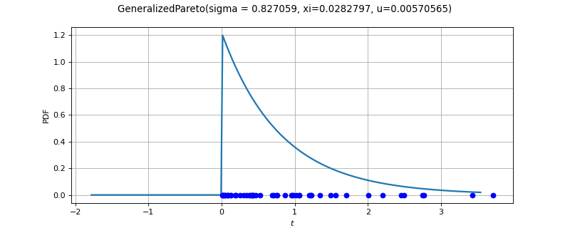
-
class
GeneralizedParetoFactory(*args)¶ Generalized Pareto factory.
- Available constructor:
GeneralizedParetoFactory()
See also
Notes
Several estimators are available to build a GeneralizedPareto distribution from a scalar sample (see [matthys2003] for the theory).
The chosen algorithm depends on the size of the sample compared to the
ResourceMapkey GeneralizedParetoFactory-SmallSize:When the size of the sample is small the method of moments is used, with a fallback on the exponential regression method
When the size of the sample is large the exponential regression method is used, with a fallback on the moments estimator
Moments based estimator:
Lets denote:
 the empirical
mean of the sample,
the empirical
mean of the sample, its empirical variance.
its empirical variance.
Then we estimate
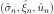
using:(1)¶
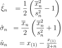
This estimator is well-defined only if
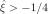
, otherwise the second moment does not exist.Probability weighted moments based estimator:
Lets denote:
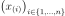
the sample sorted in ascending order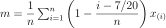
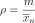
Then we estimate
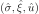
using:(2)¶
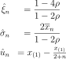
This estimator is well-defined only if
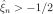
, otherwise the first moment does not exist.Maximum likelihood based estimator:
These estimators are not yet implemented.
For a given
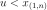
, we get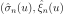
by maximizing the likelihood of the sample :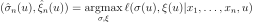
The threshold
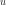
is obtained by maximizing the optimal likelihood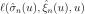
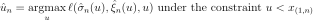
The initial point of the optimisation problem is
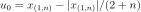
.Exponential regression based estimator:
Lets denote:
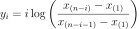
for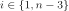
Then we estimate using:
(3)¶
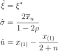
Where
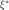
maximizes:(4)¶
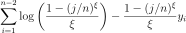
under the constraint
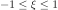
.Methods
build(self, \*args)Build the distribution.
buildAsGeneralizedPareto(self, \*args)Build the distribution as a GeneralizedPareto type.
buildEstimator(self, \*args)Build the distribution and the parameter distribution.
buildMethodOfExponentialRegression(self, sample)Build the distribution based on the exponential regression estimator.
buildMethodOfMoments(self, sample)Build the distribution based on the method of moments estimator.
Build the distribution based on the probability weighted moments estimator.
getBootstrapSize(self)Accessor to the bootstrap size.
getClassName(self)Accessor to the object’s name.
getId(self)Accessor to the object’s id.
getName(self)Accessor to the object’s name.
getOptimizationAlgorithm(self)Accessor to the solver.
getShadowedId(self)Accessor to the object’s shadowed id.
getVisibility(self)Accessor to the object’s visibility state.
hasName(self)Test if the object is named.
hasVisibleName(self)Test if the object has a distinguishable name.
setBootstrapSize(self, bootstrapSize)Accessor to the bootstrap size.
setName(self, name)Accessor to the object’s name.
setOptimizationAlgorithm(self, solver)Accessor to the solver.
setShadowedId(self, id)Accessor to the object’s shadowed id.
setVisibility(self, visible)Accessor to the object’s visibility state.
-
__init__(self, \*args)¶ Initialize self. See help(type(self)) for accurate signature.
-
build(self, \*args)¶ Build the distribution.
Available usages:
build()
build(sample)
build(param)
- Parameters
- sample2-d sequence of float, of dimension 1
The sample from which the distribution parameters are estimated.
- paramCollection of
PointWithDescription A vector of parameters of the distribution.
Notes
In the first usage, the default
GeneralizedParetodistribution is built.In the second usage, the parameters are evaluated according the following strategy:
If the sample size is less or equal to GeneralizedParetoFactory-SmallSize from
ResourceMap, then the method of probability weighted moments is used. If it fails, the method of exponential regression is used.Otherwise, the first method tried is the method of exponential regression, then the method of probability weighted moments if the first one fails.
In the third usage, a
GeneralizedParetodistribution corresponding to the given parameters is built.
-
buildAsGeneralizedPareto(self, \*args)¶ Build the distribution as a GeneralizedPareto type.
Available usages:
build()
build(sample)
build(param)
- Parameters
- sample2-d sequence of float, of dimension 1
The sample from which the distribution parameters are estimated.
- paramsequence of float
A vector of parameters of the distribution.
-
buildEstimator(self, \*args)¶ Build the distribution and the parameter distribution.
- Parameters
- sample2-d sequence of float
Sample from which the distribution parameters are estimated.
- parameters
DistributionParameters Optional, the parametrization.
- Returns
- resDist
DistributionFactoryResult The results.
- resDist
Notes
According to the way the native parameters of the distribution are estimated, the parameters distribution differs:
Moments method: the asymptotic parameters distribution is normal and estimated by Bootstrap on the initial data;
Maximum likelihood method with a regular model: the asymptotic parameters distribution is normal and its covariance matrix is the inverse Fisher information matrix;
Other methods: the asymptotic parameters distribution is estimated by Bootstrap on the initial data and kernel fitting (see
KernelSmoothing).
If another set of parameters is specified, the native parameters distribution is first estimated and the new distribution is determined from it:
if the native parameters distribution is normal and the transformation regular at the estimated parameters values: the asymptotic parameters distribution is normal and its covariance matrix determined from the inverse Fisher information matrix of the native parameters and the transformation;
in the other cases, the asymptotic parameters distribution is estimated by Bootstrap on the initial data and kernel fitting.
Examples
Create a sample from a Beta distribution:
>>> import openturns as ot >>> sample = ot.Beta().getSample(10) >>> ot.ResourceMap.SetAsUnsignedInteger('DistributionFactory-DefaultBootstrapSize', 100)
Fit a Beta distribution in the native parameters and create a
DistributionFactory:>>> fittedRes = ot.BetaFactory().buildEstimator(sample)
Fit a Beta distribution in the alternative parametrization
 :
:>>> fittedRes2 = ot.BetaFactory().buildEstimator(sample, ot.BetaMuSigma())
-
buildMethodOfExponentialRegression(self, sample)¶ Build the distribution based on the exponential regression estimator.
- Parameters
- sample2-d sequence of float, of dimension 1
The sample from which the distribution parameters are estimated.
-
buildMethodOfMoments(self, sample)¶ Build the distribution based on the method of moments estimator.
- Parameters
- sample2-d sequence of float, of dimension 1
The sample from which the distribution parameters are estimated.
-
buildMethodOfProbabilityWeightedMoments(self, sample)¶ Build the distribution based on the probability weighted moments estimator.
- Parameters
- sample2-d sequence of float, of dimension 1
The sample from which the distribution parameters are estimated.
-
getBootstrapSize(self)¶ Accessor to the bootstrap size.
- Returns
- sizeinteger
Size of the bootstrap.
-
getClassName(self)¶ Accessor to the object’s name.
- Returns
- class_namestr
The object class name (object.__class__.__name__).
-
getId(self)¶ Accessor to the object’s id.
- Returns
- idint
Internal unique identifier.
-
getName(self)¶ Accessor to the object’s name.
- Returns
- namestr
The name of the object.
-
getOptimizationAlgorithm(self)¶ Accessor to the solver.
- Returns
- solver
OptimizationAlgorithm The solver used for numerical optimization of the likelihood.
- solver
-
getShadowedId(self)¶ Accessor to the object’s shadowed id.
- Returns
- idint
Internal unique identifier.
-
getVisibility(self)¶ Accessor to the object’s visibility state.
- Returns
- visiblebool
Visibility flag.
-
hasName(self)¶ Test if the object is named.
- Returns
- hasNamebool
True if the name is not empty.
-
hasVisibleName(self)¶ Test if the object has a distinguishable name.
- Returns
- hasVisibleNamebool
True if the name is not empty and not the default one.
-
setBootstrapSize(self, bootstrapSize)¶ Accessor to the bootstrap size.
- Parameters
- sizeinteger
Size of the bootstrap.
-
setName(self, name)¶ Accessor to the object’s name.
- Parameters
- namestr
The name of the object.
-
setOptimizationAlgorithm(self, solver)¶ Accessor to the solver.
- Parameters
- solver
OptimizationAlgorithm The solver used for numerical optimization of the likelihood.
- solver
-
setShadowedId(self, id)¶ Accessor to the object’s shadowed id.
- Parameters
- idint
Internal unique identifier.
-
setVisibility(self, visible)¶ Accessor to the object’s visibility state.
- Parameters
- visiblebool
Visibility flag.